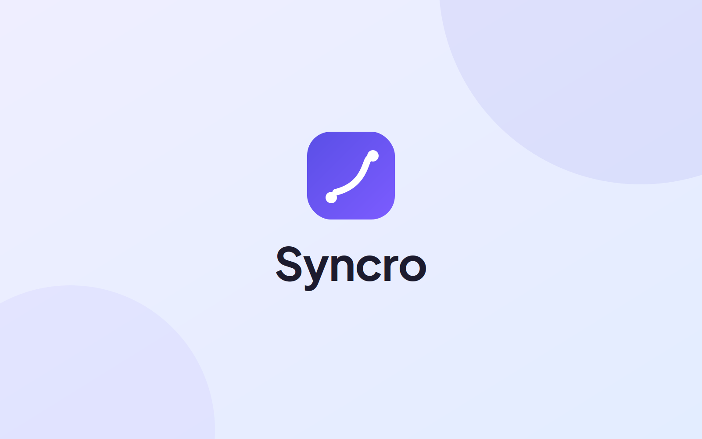

A travel companion that takes the friction out of getting somewhere — traffic alerts, departure reminders, and parking help in one flow.

The brief
Getting somewhere on time is rarely about the trip itself — it's the small uncertainties around it. When should I leave? Is traffic bad right now? Where will I park when I get there? Each one is minor, but together they make travel stressful.
Syncro pulls those moments into a single experience: traffic alerts, departure reminders, and parking assistance. As an HCI project, the emphasis was on validating the design with real users, not just shipping screens — so research and testing drove every decision.
What I owned
I contributed across the HCI cycle: understanding how people actually plan and worry about trips, prototyping the experience in Figma, and running usability testing to find where the design held up and where it didn't. The point was to let evidence — not assumptions — shape the final design.
Add your specifics here: a usability finding that surprised you, a change you made because testing demanded it, or how you measured whether the design worked.
Process
Explored how people currently manage departures, traffic, and parking — and where the anxiety actually lives in that experience.
Built interactive prototypes in Figma to make the concept testable — alerts, reminders, and the parking flow, real enough to put in front of people.
Ran sessions to watch people use the prototype, capturing where they hesitated, misread, or got stuck — the gap between what we intended and what they experienced.
Fed the findings back into the design, refining the flows so the final version reflected how people actually behaved — not how we assumed they would.
Selected screens
Reflection